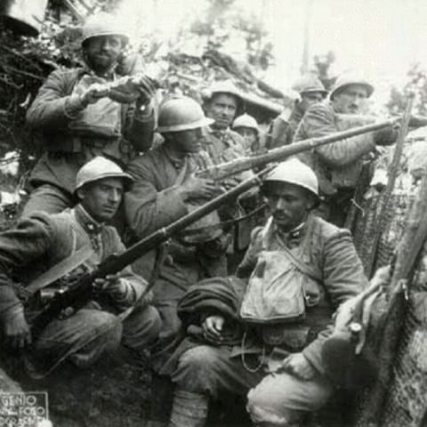
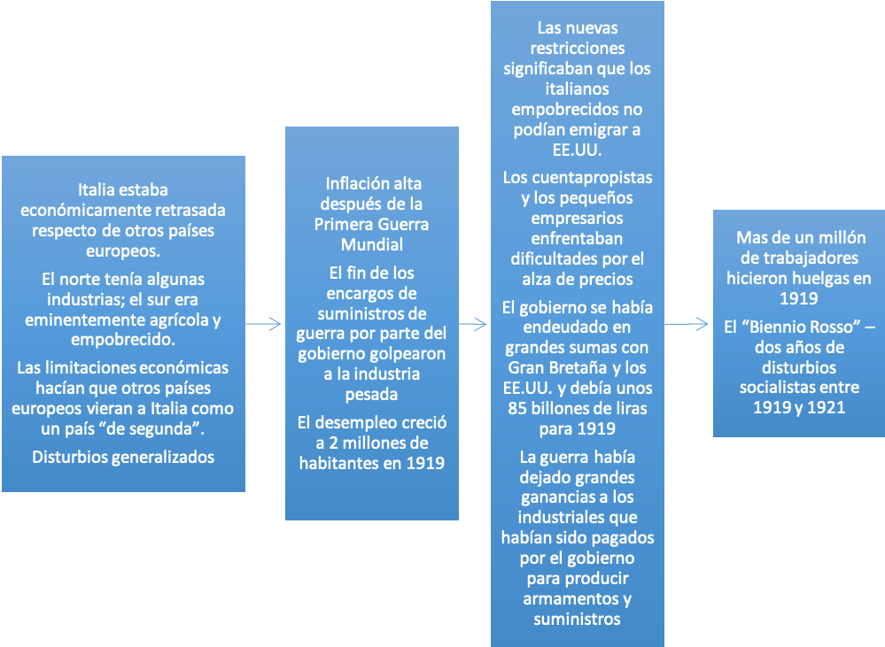
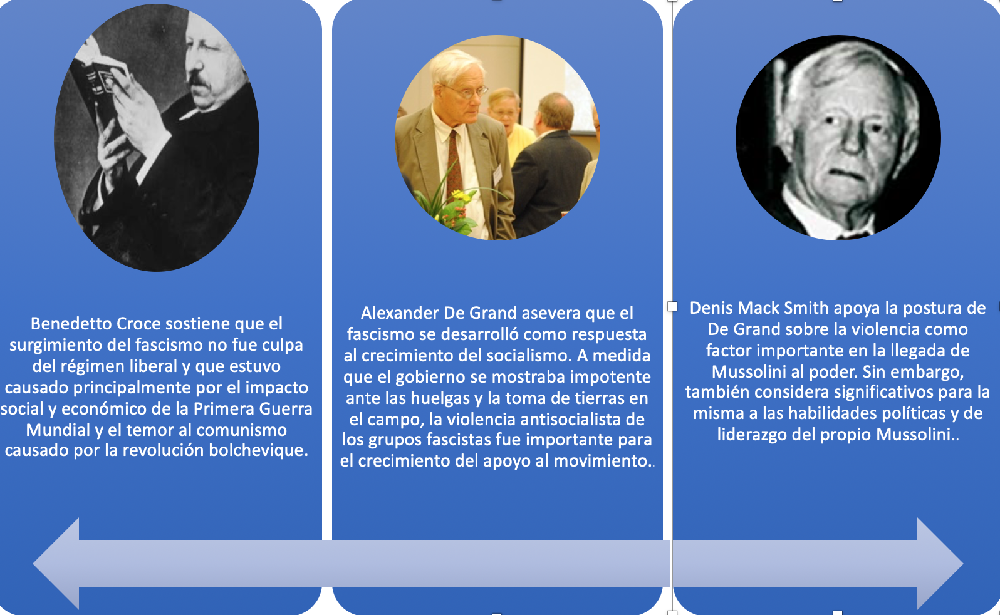
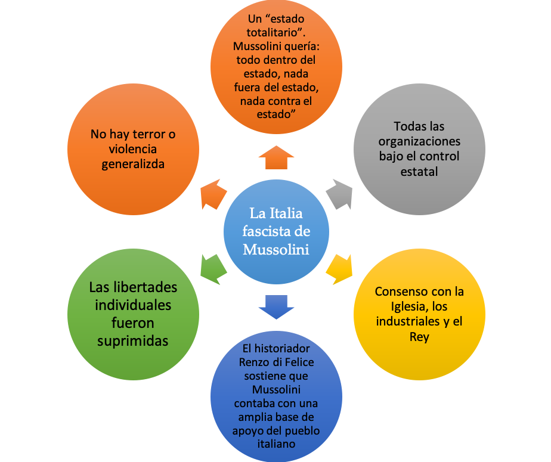

IB Docs (2) Team
IB Docs (2) Team

3. Italia 1918 - 1939 ATL

Aquí hay algunas actividades diferentes que puede hacer para esta parte de la sección 14 sobre Italia. En esta página hay una mezcla de actividades iniciales, actividades de análisis y evaluación de fuentes, actividades analíticas, trabajo individual y trabajo en equipo que también pueden descargarse.
Los vídeos y las ideas de enseñanza para los vídeos pueden encontrarse en la página de vídeos de este tema (ver la parte izquierda de esta página).
Preguntas orientadoras:
¿Qué debilidades de largo plazo en Italia contribuyeron al ascenso al poder de Mussolini?
¿Cómo ayudó la Primera Guerra Mundial al ascenso de Mussolini al poder?
¿Qué tan importante fue el liderazgo de Mussolini en su ascenso al poder?
¿Cuál fue el papel de la ideología fascista en el ascenso de Mussolini?
¿Cuáles fueron los acontecimientos clave en el ascenso de Mussolini al poder?
¿Cómo consolidó Mussolini su poder?
¿Qué éxito tuvieron las políticas sociales, económicas y políticas de Mussolini?
¿Cuál fue la naturaleza del estado fascista?
1. ¿Qué debilidades a largo plazo en la Italia de antes de la Primera Guerra Mundial contribuyeron al ascenso de Mussolini al poder?

Tropas italianas en las trincheras 1916
Tarea Uno
Enfoques de aprendizaje: Habilidades de pensamiento e investigación
En pequeños grupos investiguen la situación política, económica y social de Italia en la década anterior al estallido de la Primera Guerra Mundial. Deben investigar los siguientes temas clave y, para cada uno, evaluar el grado en que la Italia liberal de la preguerra cumplía cada uno de los criterios de un estado estable:
Tarea Uno
Enfoques de aprendizaje: Habilidades de pensamiento e investigación
En pequeños grupos investiguen la situación política, económica y social de Italia en la década anterior al estallido de la Primera Guerra Mundial. Deben investigar los siguientes temas clave y, para cada uno, evaluar el grado en que la Italia liberal de la preguerra cumplía cada uno de los criterios de un estado estable:
Estabilidad política
Gobierno estable y liderazgo fuerte
El gobierno y los partidos políticos tenían el apoyo del pueblo
Oposición política limitada
Estabilidad económica
Crecimiento de la agricultura
Crecimiento de la industria
Calidad de vida relativamente buena
Condiciones de trabajo relativamente buenas
Estabilidad social
Una clara identidad y unidad cultural
Libertad religiosa / tolerancia
Acceso a la educación
Acceso a la atención médica
Política exterior
Respeto internacional
Buenas relaciones con los gobiernos extranjeros
Papel desempeñado en la diplomacia internacional
Fronteras territoriales indiscutibles
Como continuación (o preludio de la tarea anterior) la primera parte del siguiente video da un buen panorama de Italia en vísperas de la Primera Guerra Mundial. Luego explica por qué Italia se unió a la guerra del lado de la Entente
Tarea dos
Enfoques de aprendizaje: Habilidades de pensamiento
Vea el siguiente y complete las notas que ha recogido de su tarea de investigación anterior.
1. ¿Cuáles son sus conclusiones sobre Italia en vísperas de la Primera Guerra Mundial?
2. ¿Cuáles eran los objetivos de Italia al unirse a la guerra del lado de la Entente?
Tarea tres
Enfoques de aprendizaje: Habilidades de pensamiento y comunicación
Crea una infografía que muestre las debilidades políticas a largo y corto plazo del estado italiano en vísperas de la Primera Guerra Mundial. Usa tu investigación de la primera tarea como ayuda. También puedes hacer clic en el ojo de abajo para más pistas sobre los factores y situaciones que deberías incluir.
- Falta de identidad nacional tras la unificación de Italia
- Menos del 2% hablaba italiano.
- La Italia liberal estaba controlada por las élites gobernantes del norte y del centro
- Los pobres de las zonas urbanas y rurales no tenían voto.
- Pío IX instruyó a los católicos a boicotear las elecciones.
- El papel de las ligas y cooperativas campesinas en el campo.
- A finales del siglo XIX había agrupaciones de clase obrera como los sindicatos.
- El Partido Socialista Italiano fue fundado en 1892
- Los nacionalistas promovieron fuertemente el irredentismo que pretendía apoderarse de los territorios de habla italiana del Imperio Austrohúngaro
- La política se estaba polarizando antes del estallido de la Primera Guerra Mundial.
- En junio de 1914 hubo disturbios en el norte y centro de Italia durante los levantamientos inspirados por la izquierda en lo que se conoció como la 'Semana Roja'
2. ¿Cómo ayudó la Primera Guerra Mundial al ascenso de Mussolini al poder?
Tarea Uno
Enfoques de aprendizaje: Habilidades de pensamiento
1. De a dos, lean el cuadro que figura a continuación y analicen cómo los problemas económicos de la Italia de la posguerra pueden haber socavado el gobierno y fomentado el apoyo a ideas políticas más radicales.
2. De a dos revisen el material de investigación que reunieron sobre la sociedad italiana antes de la Primera Guerra Mundial. Evalúe con su pareja la medida en que los resultados económicos de la Primera Guerra Mundial habían conducido a una mayor cohesión social o a una mayor división social

Tarea dos
Enfoques de aprendizaje: Habilidades de pensamiento y comunicación
El impacto de la Primera Guerra Mundial en Italia: tarea de elaboración de un artículo periodístico
De a dos, lean la información que sigue a continuación. Redacten un informe periodístico sobre el impacto de la Primera Guerra Mundial en Italia. Debería incluir: un título, una editorial sobre los efectos políticos y económicos de la guerra y una evaluación sobre el impacto a largo plazo de la guerra en Italia.
Había habido profundas divisiones en Italia durante el período conocido como "crisis de intervención" después de que estallara la Primera Guerra Mundial en agosto de 1914. Italia entró en el conflicto en mayo de 1915 después de negociar las ganancias territoriales en el Tratado de Londres. Se acordó que Italia ganaría Trentino y Trieste, el sur del Tirol, Istria y Dalmacia.
Aunque eran populares entre los nacionalistas, las ganancias territoriales en el norte del país significaban poco para los pobres del sur del país. La Iglesia Católica también estaba inquieta por una guerra contra la Austria católica. El principal partido socialista estaba en contra de la guerra, sin embargo, algunos de la izquierda - incluyendo a Benito Mussolini - se alejaron de la línea del partido y apoyaron la intervención.
Al final de la guerra, en noviembre de 1918, 5 millones de italianos habían servido en las fuerzas armadas, y 650.000 habían sido asesinados con cientos de miles de heridos. Los veteranos del conflicto volvieron a una Italia que se encontraba en una crisis económica y política cada vez más profunda. La guerra había aumentado las divisiones políticas, y los que se oponían a la intervención de la izquierda estaban resentidos por los que la habían apoyado. La mano de obra industrial había aumentado significativamente con la demanda de las industrias bélicas y esto, a su vez, había aumentado el poder y la influencia de los sindicatos.
Como ya han visto, una crisis económica se desarrolló después del final de la guerra. También hubo una crisis política. Hubo una extensión de la franquicia y a los liberales les fue mal en las elecciones de 1919. Además, ningún partido obtuvo una clara mayoría general. El apoyo a la izquierda aumentó, y la revolución bolchevique de octubre de 1917 en Rusia inspiró a los socialistas italianos a pedir el derrocamiento del estado liberal. Los socialistas tuvieron éxito en las ciudades del norte y en respuesta a la aparente amenaza que representaban, el Partido Popular Italiano, los Popolari, fue fundado y apoyado por el Papa Benedicto XV. Los partidos tradicionales de la Italia liberal estaban perdiendo terreno y credibilidad. Hubo olas de huelgas y protestas en lo que se conoció como el “Biennio Rosso” de 1919 y 1920. Las clases propietarias se horrorizaron ante la aparente ineficacia del gobierno para contrarrestar las huelgas en las ciudades y las confiscaciones de tierras en el campo. En enero de 1921 se fundó el Partido Comunista Italiano.
El gobierno también se enfrentó a las críticas de los nacionalistas que consideraron el resultado del acuerdo de paz de Versalles como un fracaso para Italia. Italia obtuvo, por el Tratado de San Germaine, la provincia de Tirol, la península de Istria, el puerto de Trieste, las islas del Dodecaneso, un protectorado y un puerto en Albania, pero no recibió el puerto de Fiume ni Dalmacia.
De hecho, hubo una indignación generalizada y el poeta y nacionalista Gabriele d'Annunzio repudió el tratado llamándolo "una victoria mutilada".
Fue dentro de esta crisis política, económica y social de la posguerra que el apoyo al fascismo comenzó a crecer. Como sus doctrinas estaban vagamente definidas, el fascismo podía atraer a grupos de todas las clases. Sus reclamos por “ley y orden”, y su voluntad de tomar medidas directas contra los socialistas en las calles eran cada vez más atractivas para un amplio sector de la sociedad italiana. Muchos antiguos partidarios conservadores del régimen liberal habían perdido la fe en el ineficaz sistema parlamentario
Tarea tres
Enfoques de aprendizaje: Habilidades de pensamiento e investigación
De a dos, investiguen la ocupación de Fiume por Gabriele d'Annunzio en septiembre de 1919.
Discutan cómo el "Asunto Fiume" puede haber socavado aún más la credibilidad del gobierno y el sistema democrático liberal.
3. ¿Qué tan importante fue el liderazgo de Mussolini en su ascenso al poder?
En primer lugar:
Haga clic aqui para ver una pintura del artista italiano Giacomo Balla que muestra la Marcha de Mussolini sobre Roma.
¿Cuál es el mensaje de esta pintura?
Haga clic en el ojo para ver las pistas
Podrías considerar lo siguiente:
- La postura de Mussolini
- las expresiones faciales de los que le rodean
- la posición de Mussolini en el centro y al frente de la multitud
Tarea Uno
Enfoques de aprendizaje: Habilidades de pensamiento y comunicación
Discuta en pequeños grupos las cualidades que requiere una persona para ser un líder efectivo. Elaborar una lista de "criterios" para juzgar la capacidad de liderazgo político de un individuo. Usando sus "criterios de liderazgo" lea la corta lista de puntos biográficos sobre Mussolini y evalúe la importancia de sus rasgos de liderazgo en el crecimiento del movimiento fascista en Italia.
- En 1912 Mussolini se convirtió en editor del periódico socialista, Avanti! Demostró sus capacidades como un escritor convincente y radical.
- Mussolini renunció a Avanti en 1914, cuando se volvió a favor de la guerra y creó un nuevo periódico, Il Popolo d'Italia, que promovió la intervención italiana en la Primera Guerra Mundial. Fue expulsado del partido socialista. Entendió el estado de ánimo "popular" y demostró estar abierto a cambiar su postura sobre los temas.
- Mussolini fue reclutado en el ejército pero fue dispensado y enviado a su casa en 1917, y regresó a trabajar como editor de Il Popolo. En los editoriales afirmaba que Italia necesitaba un "dictador" para dirigir eficazmente la guerra. Il Popolo se convirtió en el punto focal del movimiento fascista.
- Mussolini fundó el movimiento fascista en 1919 durante la crisis de la posguerra que asoló a Italia. Era un orador carismático y era pragmático y flexible políticamente.
- Mussolini se posicionó como el líder central y coherente de un partido fascista que estaba dividido. Se mostraba como la única figura que podía llevar el partido al parlamento y al poder político.
- Mussolini apeló a las masas promoviendo el nacionalismo con cierta dinámica socialista. También logró apelar a las élites como un hombre fuerte dispuesto a luchar contra la izquierda y controlar a sus propios jefes de partido, los ras.
4. ¿Cuál fue el papel de la ideología fascista en el ascenso de Mussolini?
Tarea Uno
Enfoques de aprendizaje: Habilidades de pensamiento y sociales
Lea la descripción de Mussolini del fascismo que se puede encontrar aquí.
Haga clic en el ojo para una traducción.
El fascismo, que considera y observa el futuro y el desarrollo de la humanidad, separado de las consideraciones políticas del momento, no cree ni en la posibilidad ni en la utilidad de la paz perpetua. Por lo tanto, repudia la doctrina del Pacifismo, que nace de la renuncia a la lucha y de la cobardía ante el sacrificio. La guerra por sí sola lleva a su máxima tensión toda la energía humana y pone el sello de la nobleza en los pueblos que tienen el coraje de enfrentarla. Todas las demás pruebas son sustitutos, que nunca ponen a los hombres en la posición de tener que tomar la gran decisión -- la alternativa de vida o muerte...
...El fascista acepta la vida y la ama, sin saber nada del suicidio y despreciando el suicidio: concibe más bien la vida como un deber y una lucha y una conquista, pero sobre todo para los demás -- los que están cerca y los que están lejos, los contemporáneos y los que vendrán después...
...el fascismo [es] todo lo contrario de... el socialismo marxista, la concepción materialista de la historia de la civilización humana puede explicarse simplemente a través del conflicto de intereses entre los diversos grupos sociales y por el cambio y desarrollo de los medios e instrumentos de producción... El fascismo, ahora y siempre, cree en la santidad y en el heroísmo; es decir, en acciones influenciadas por ningún motivo económico, directo o indirecto. Y si se niega la concepción económica de la historia, según la cual los hombres no son más que marionetas, llevadas de un lado a otro por las olas del azar, mientras que las verdaderas fuerzas directoras están bastante fuera de su control, se deduce que también se niega la existencia de una guerra de clases inmutable e invariable, la progenie natural de la concepción económica de la historia. Y sobre todo el fascismo niega que la guerra de clases pueda ser la fuerza preponderante en la transformación de la sociedad...
Después del socialismo, el fascismo combate todo el complejo sistema de ideología democrática y lo repudia, ya sea en sus premisas teóricas o en su aplicación práctica. El fascismo niega que la mayoría, por el simple hecho de serlo, pueda dirigir la sociedad humana; niega que sólo los números puedan gobernar mediante una consulta periódica, y afirma la inmutable, beneficiosa y fructífera desigualdad de la humanidad, que nunca puede ser nivelada permanentemente mediante el mero funcionamiento de un proceso mecánico como el sufragio universal...
...El fascismo niega, en democracia, la absurda falsedad convencional de la igualdad política disfrazada de irresponsabilidad colectiva, y el mito de la "felicidad" y el progreso indefinido....
...dado que el siglo XIX fue el siglo del Socialismo, del Liberalismo y de la Democracia, no se deduce necesariamente que el siglo XX deba ser también un siglo de Socialismo, Liberalismo y Democracia: las doctrinas políticas pasan, pero la humanidad permanece, y se puede esperar más bien que éste sea un siglo de autoridad... un siglo de Fascismo. Porque si el siglo XIX fue un siglo de individualismo se puede esperar que éste sea el siglo del colectivismo y por lo tanto el siglo del Estado...
El fundamento del fascismo es la concepción del Estado, su carácter, su deber y su objetivo. El fascismo concibe el Estado como un absoluto, en comparación con el cual todos los individuos o grupos son relativos, sólo para ser concebidos en su relación con el Estado. La concepción del Estado liberal no es la de una fuerza directora, que guía el juego y el desarrollo, tanto material como espiritual, de un cuerpo colectivo, sino simplemente una fuerza limitada a la función de registrar los resultados: por otra parte, el Estado fascista es en sí mismo consciente y tiene en sí mismo una voluntad y una personalidad, por lo que puede llamarse el Estado "ético"...
...El Estado fascista organiza la nación, pero deja un margen suficiente de libertad al individuo; éste se ve privado de toda libertad inútil y eventualmente nociva, pero conserva lo esencial; el poder de decisión en esta cuestión no puede ser el individuo, sino sólo el Estado...
...Para el fascismo, el crecimiento del imperio, es decir, la expansión de la nación es una manifestación esencial de vitalidad, y su opuesto, un signo de decadencia. Los pueblos que se levantan, o que vuelven a levantarse después de un período de decadencia, son siempre imperialistas; y la renuncia es un signo de decadencia y de muerte. El fascismo es la doctrina mejor adaptada para representar las tendencias y las aspiraciones de un pueblo como el de Italia, que se levanta de nuevo después de muchos siglos de humillación y servidumbre extranjera. Pero el imperio exige disciplina, coordinación de todas las fuerzas y un profundo sentido del deber y el sacrificio: este hecho explica muchos aspectos del funcionamiento práctico del régimen, el carácter de muchas fuerzas del Estado y las medidas necesariamente severas que deben adoptarse contra quienes se opongan a este movimiento espontáneo e inevitable de Italia en el siglo XX, y se opongan a él recordando la ideología desgastada del siglo XIX - repudiada dondequiera que haya habido el valor de emprender grandes experimentos de transformación social y política; porque nunca antes la nación ha estado más necesitada de autoridad, de dirección y de orden. Si cada época tiene su propia doctrina característica, hay mil signos que apuntan al fascismo como la doctrina característica de nuestro tiempo. Porque si una doctrina debe ser un ser vivo, esto se demuestra por el hecho de que el fascismo ha creado una fe viva; y que esta fe es muy poderosa en la mente de los hombres se demuestra por aquellos que han sufrido y muerto por ella
¿De que maneras esta descripción apoya los siguientes conceptos?
- Nacionalismo
- Un estado de partido único
- Un líder o dictador fuerte
- Imperialismo
- Guerra
- La emoción y el instinto sobre la razón
- Supremacía de naciones y razas
- La autoridad del estado sobre el individuo
¿A qué ideas dice que se opone el fascismo?
2. Discuta a qué grupos de la sociedad italiana podrían apelar estas ideas. ¿Por qué la crisis de la posguerra en Italia conduciría a un aumento del apoyo a las ideas fascistas y facilitaría el ascenso de Mussolini?
5. ¿Cuáles fueron los acontecimientos clave en el ascenso de Mussolini al poder?
Tarea Uno
Enfoques de aprendizaje: Habilidades de pensamiento y autogestión
De a dos, lean el siguiente cuadro que resume los principales acontecimientos que condujeron a la infame "Marcha sobre Roma" de Mussolini. Discutan hasta qué punto su nombramiento como Primer Ministro por el Rey Víctor Manuel III se debió al uso de la coacción por parte de Mussolini y los fascistas.
Los Fascistas hicieron un amala elección
Mussolini comprendió que el partido debía girar hacia la derecha para ganar apoyo popular
Se les instruye a los ras para que organicen a las camisas negras como paramilitares
Los camisas negras atacan a los socialistas y los trabajadores en huelga
Los fascistas ganan 35 bancas en el parlamento
El Primer Ministro Giolitti invita a miembros del partido fascista a formar parte de su gobierno. Esto le da credibilidad y visibilidad al movimiento.
El movimiento fascista gana terreno y se transforma de una fuerza urbana a una rural.
Mussolini estableció el Partido Nacional Fascista en octubre 1921
Escala la violencia contra la izquierda
Mussolini continúa explorando formas de llegar al poder legalmente
En septiembre da un discurso de apoyo al rey
En julio 1922 los sindicatos socialistas convocan a una huelga que comienza en agosto. Las clases medias miran a los fascistas esperando que restauren el imperio de la ley y el orden
El 16 de octubre Mussolini se reúne con lideres fascistas en Milán. Deciden que es momento de tomar el poder
El 27 de octubre 10.000 fascistas se reúnen en diferentes puntos en las afueras de Roma, listos para tomar edificios claves
El Primer Ministro Facta solicita al rey que se decrete la ley marcial y se llame al ejercito a aplastar la revuelta
Victor Manuel III envía un telegrama a Mussolini en 29 de octubre: “Muy urgente. Prioritario, Mussolini, Milán. Su Majestad el Rey le solicita que proceda de inmediato a Roma para hablar con Ud.”
Mussolini llega a Roma el 30 de octubre y jura como Primer Ministro
Tarea dos
Enfoques de aprendizaje: Habilidades de pensamiento y autogestión
En pares lean las perspectivas de los historiadores sobre el ascenso al poder de Mussolini en el siguiente cuadro. Discuta aquellos puntos de vista con los cuales está de acuerdo y explique por qué

Tarea tres
Enfoques de aprendizaje: Habilidades de pensamiento
Con el mismo compañero de la tarea anterior, investiguen los puntos de vista de otros historiadores sobre el ascenso de Mussolini. Intenten encontrar historiadores de diferentes países e historiadores que escriban en diferentes períodos de tiempo. Exploren hasta qué punto hay consenso entre los historiadores a] que escriben dentro de la misma década b] que escriben en períodos diferentes.
6. ¿Cómo consolidó Mussolini su poder?
Tarea Uno
Enfoques de aprendizaje: Habilidades de pensamiento y sociales
Formen grupos de cuatro. Cada estudiante se centrará en uno de los siguientes métodos utilizados por Mussolini para consolidar su estado autoritario.
- Uso de métodos legales
- Uso de la fuerza
- Liderazgo carismático
- Difusión de propaganda
Lean los eventos que se describen a continuación y redacten un breve discurso persuasivo que promueva vuestro método como el medio clave para la consolidación del control de Mussolini.
Gobernar por decreto Noviembre de 1922 - Mussolini afirmó que el poder de gobernar por decreto sería una medida temporal hasta que la situación en Italia se estabilizara. En noviembre de 1922 el parlamento le dio a Mussolini el poder de gobernar por decreto durante un año
La creación del Gran Consejo Fascista diciembre de 1922 - Mussolini consolidó su control sobre el Partido Fascista creando el Gran Consejo Fascista. El mismo Mussolini hizo todos los nombramientos para el Gran Consejo. Los escuadrones fascistas se fusionaron en una milicia nacional en enero de 1923.
Ganó el apoyo de la Iglesia 1923 - Mussolini ofreció ayuda para el Banco Católico en dificultades y dijo que haría obligatoria la educación religiosa en las escuelas y prohibiría la anticoncepción.
Aumento de la fuerza parlamentaria 1923 - persuadió a los nacionalistas para que se fusionaran con el Partido Fascista
Ganó el apoyo de las grandes empresas 1923 - Mussolini prometió a la Confindustria que no se perseguiría la evasión fiscal y que se abolirían los controles de precios y rentas
La Ley Acerbo Julio de 1923 - Mussolini propuso que al partido que ganara más votos en una elección se le dieran dos tercios de los escaños en la Cámara de Diputados. Cuando la Ley Acerbo fue debatida en el parlamento obtuvo una gran mayoría de apoyo. Escuadrones de fascistas armados patrullaban la cámara mientras se realizó la votación.
La Ley Acerbo entró en vigor en las elecciones generales de abril de 1924. Los fascistas aumentaron sus escaños a 374 debido, al menos en parte, al perfil público de Mussolini. Sin embargo, también hubo fraude electoral e intimidación por parte de los escuadrones fascistas.
El asesinato de Giacomo Matteotti, Junio de 1924 - El socialista Matteotti pidió que el resultado de las elecciones fuera declarado nulo el 30 de mayo y el 10 de junio, un grupo de fascistas secuestró a Matteotti y lo apuñaló hasta la muerte. Hubo incluso denuncias de que Mussolini habría estado involucrado. Cien diputados de la oposición abandonaron el Parlamento. Mussolini ordenó el arresto de los sospechosos fascistas, pero también puso más camisas negras en las calles para sofocar las protestas por el asesinato. Las protestas en la prensa y en las calles se intensificaron, y en julio Mussolini impuso la censura de prensa y prohibió las reuniones políticas de los partidos de la oposición. Sin embargo, el escándalo del asunto Matteotti continuó y los principales fascistas radicales pidieron a Mussolini que tomara "medidas dictatoriales". El 3 de enero de 1925, Mussolini pronunció un dramático discurso en el parlamento y prometió una acción decisiva contra sus oponentes. Todavía tenía el apoyo tácito del Rey y se movilizaron camisas negras para atacar a los grupos de oposición
Poder de promulgar leyes sin el parlamento enero 1926 - A Mussolini se le dio el derecho de hacer leyes sin tener que consultar al parlamento. Para noviembre de 1926 todos los partidos de la oposición se habían disuelto. En 1928 una ley puso fin al sufragio universal y el Rey perdió el derecho a elegir un primer ministro.
Acuerdo con la Iglesia 1929 - Mussolini firmó los Pactos de Letrán con el papado
7. ¿Qué éxito tuvieron las políticas sociales, económicas y políticas de Mussolini?
Tarea Uno
Enfoques de aprendizaje: Habilidades de pensamiento e investigación
Formen grupos de tres.
Realizarán una investigación individual y luego informarán a los demás. Esta es una actividad de rompecabezas; el objetivo es que cada grupo termine con una tabla completa.
Cada uno de ustedes debe investigar una de las siguientes áreas de política que Mussolini implementó. Necesitan usar la tabla de abajo (imprimirla) para guiar su investigación. Su punto de partida deben ser los objetivos específicos, luego los detalles de las políticas, y finalmente la evidencia de su impacto y el relativo éxito o fracaso.
 Tabla para resumir las políticas económicas, politicas y sociales de Mussolini
Tabla para resumir las políticas económicas, politicas y sociales de Mussolini
8. ¿Cuál era la naturaleza del estado fascista?
Tarea Uno
ATL: Habilidades de pensamiento y comunicación
De a dos, lean la información que se encuentra en el mapa mental de abajo. Añadan ejemplos, fechas y detalles del material que han cubierto e investigado en esta unidad o creen su propia infografía para explicar la naturaleza del estado fascista de Mussolini.
Enfoques de aprendizaje: habilidades de pensamiento y autogestión
Agregue detalles al mapa mental como evidencia de la naturaleza del estado fascista

 La Italia fascista de Mussolini
La Italia fascista de Mussolini
 Twitter
Twitter
 Facebook
Facebook
 LinkedIn
LinkedIn